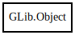

Object
Object Hierarchy:

Description:
[ CCode ( get_value_function = "g_value_get_object" , marshaller_type_name = "OBJECT" , param_spec_function = "g_param_spec_object" , ref_function = "g_object_ref" , set_value_function = "g_value_set_object" , take_value_function = "g_value_take_object" , unref_function = "g_object_unref" ) ]
public class Object
Content:
Static methods:
Creation methods:
Methods:
- public void @get (string first_property_name, ...)
- public weak Object @ref ()
- public void @set (string first_property_name, ...)
- public void add_toggle_ref (ToggleNotify notify)
- public void add_weak_pointer (void** weak_pointer_location)
- public weak Binding bind_property (string source_property, Object target, string target_property, BindingFlags flags = DEFAULT, owned BindingTransformFunc? transform_to = null, owned BindingTransformFunc? transform_from = null)
- public weak Object connect (string signal_spec, ...)
- public virtual void constructed ()
- public void disconnect (ulong handler_id)
- public virtual void dispose ()
- public T dup_data<T> (string key, DuplicateFunc<T> dup_func)
- public T dup_qdata<T> (Quark quark, DuplicateFunc<T> dup_func)
- public void force_floating ()
- public void freeze_notify ()
- public unowned ObjectClass get_class ()
- public weak T get_data<T> (string key)
- public void get_property (string property_name, ref Value value)
- public weak T get_qdata<T> (Quark quark)
- public Type get_type ()
- public void getv (string[] names, Value[] values)
- public bool is_floating ()
- public void notify_property (string property_name)
- public weak Object ref_sink ()
- public void remove_toggle_ref (ToggleNotify notify)
- public void remove_weak_pointer (void** weak_pointer_location)
- public bool replace_data<G,T> (string key, G oldval, owned T newval, out DestroyNotify? old_destroy)
- public bool replace_qdata<G,T> (Quark quark, G oldval, owned T newval, out DestroyNotify? old_destroy)
- public void set_data<T> (string key, owned T data)
- public void set_data_full (string key, void* data, DestroyNotify? destroy)
- public void set_property (string property_name, Value value)
- public void set_qdata<T> (Quark quark, owned T data)
- public void set_qdata_full (Quark quark, void* data, DestroyNotify? destroy)
- public void set_valist (string first_property_name, va_list var_args)
- public void setv (string[] names, Value[] values)
- public T steal_data<T> (string key)
- public T steal_qdata<T> (Quark quark)
- public void thaw_notify ()
- public void unref ()
- public void watch_closure (Closure closure)
- public void weak_ref (WeakNotify notify)
- public void weak_unref (WeakNotify notify)
Signals:
Fields: